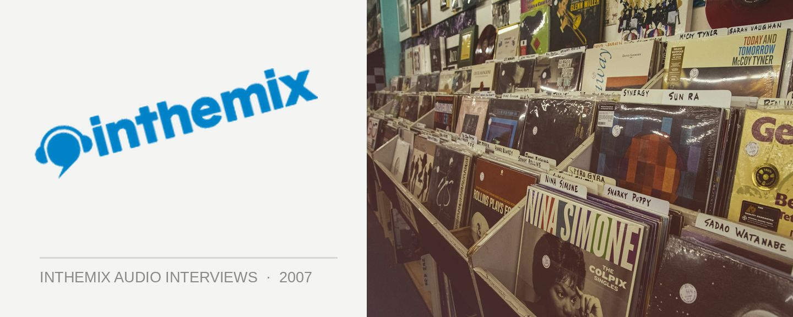

Franz & Shape [Audio]: Wear your helmet
STREAMING AUDIO INTERVIEW
Italian electro act Franz & Shape will be making their maiden voyage to Australia in July, playing a raft of both live and DJ sets around the country. Signed to Headman’s Relish Recordings label (along with rapidly rising Australian duo Riot In Belgium), the duo received widespread acclaim for the dancefloor destroying electro hit ‘Countach’ in 2005. It featured on countless mix CDs and was caned into oblivion by every electro DJ worth their weight in skin-tight Ksubi jeans.
The duo followed up their breakthrough single with several 12”s on the label, released throughout 2006, then in early 2007 they unleashed their debut album ‘Acceleration’. It’s tough as nails electro, or as ITM’s reviewer so aptly described it; “Franz & Shape, custom built for dark rooms with leather walls where everyone dances in motor bike helmets.” ITM’s Angus Paterson dons his protective headgear for this interview…
Franz & Shape’s album ‘Acceleration’ is out now through Relish/Creative Vibes. You can catch them touring throughout July:
Fri Jul 6 – Brisbane, Empire Hotel (Live)
Sat Jul 7 – Melbourne, D.A.R @ Q Bar (Live)
Sun Jul 8 – Gold Coast, Venue TBA (DJ Set)
Thu Jul 12 – Melbourne, Q Bar (DJ Set)
Fri Jul 13 – Adelaide, Onelove at Electric Circus (Live)
Sat Jul 14 – Sydney, Beware The Cat (Live)
Sun Jul 15 – Sydney, Venue TBA (DJ Set)